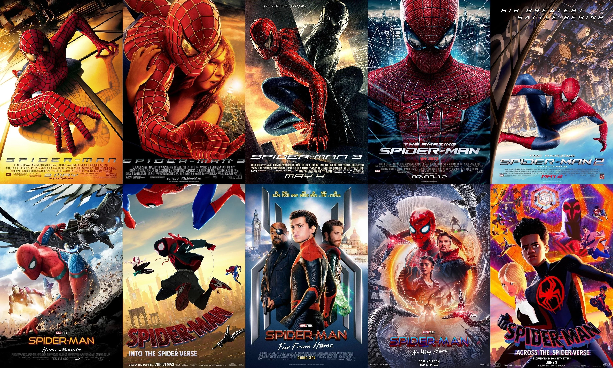

Homem Aranha



Homem Aranha
A trilogia do Homem-Aranha dirigida por Sam Raimi e estrelada por Tobey Maguire acompanha a jornada de Peter Parker do ensino médio à vida adulta, equilibrando os dilemas pessoais com o fardo de ser um super-herói.
Homem-Aranha: Um Novo Dia
O trailer de Homem-Aranha: Um Novo Dia (dirigido por Destin Daniel Cretton) mostra Peter Parker (Tom Holland) quatro anos após os eventos de Sem Volta Para Casa, vivendo totalmente sozinho em Nova York após apagar sua identidade da memória de todos.